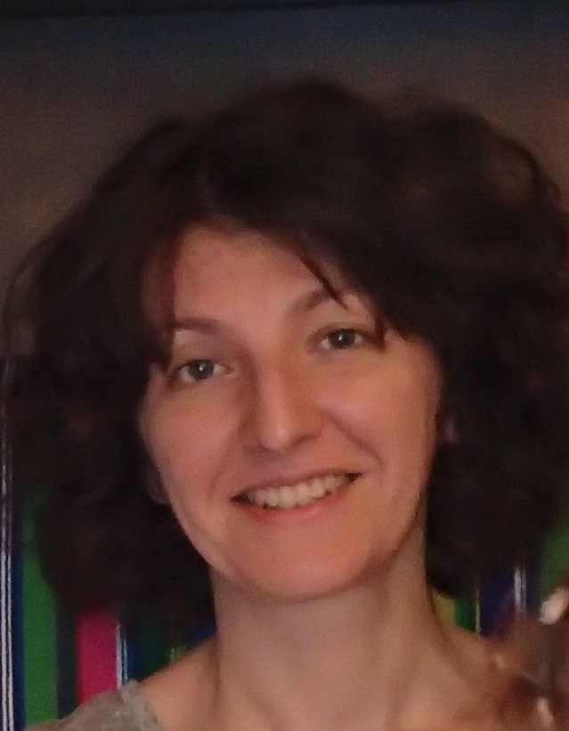

There is a great desire for self-improvement in the field of IT as a Full Stack Java Developer. I think that my determination, educability and previous experience in logistics will help me in individual and team work.
October – December 2019 Educational Center for Programming and High Tech.
Project role: Java developer.
Project description: computer software for a library.
E-Library
A2. I'm studying Level Pre-Intermediate now.